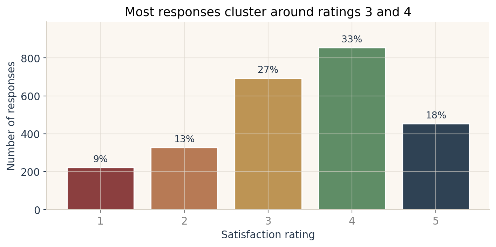

| Diagnostic | Value |
|---|---|
| Average absolute correlation among drivers | 0.397 |
| Largest absolute driver correlation | 0.504 (Trust / Good service) |
| Condition index of driver correlation matrix | 3.02 |
Key Drivers Analysis: What Actually Moves Satisfaction?
Variable importance across correlations, regression, Shapley values, relative weights, and random forests
Marketing Analytics
Variable Importance
Regression
Random Forest
Shapley Values
A customer satisfaction key-driver analysis using Pearson correlations, standardized regression, drop-one usefulness, Shapley values, Johnson relative weights, and random forest Gini importance.
1 / 4
Introduction
The assignment asks for a key-driver table for customer satisfaction. The dataset has 2553 brand-response rows across 10 brands. The outcome is satisfaction, measured from 1 to 5, and the candidate drivers are nine binary brand perceptions: trust, build quality, difference, ease, appeal, reward, popularity, service, and impact.
The central question is simple: which perceptions are most associated with higher satisfaction? The trick is that the drivers overlap. A brand that is trusted may also be seen as easy, appealing, and good at service. A useful answer therefore needs several views of variable importance, not just one correlation column.
The readings sharpen that point. Sawtooth’s driver-analysis webinar frames simple correlation and plain regression as useful but incomplete: correlation gives each attribute credit for all shared variance with satisfaction, while regression gives credit only for the unique slice left after the other attributes are controlled. When survey attributes are correlated because of halo effects, both stories can be distorted. Groemping’s relaimpo paper gives the statistical background for relative-importance measures such as averaging over orderings, which is the same logic used by the Shapley calculation below. The tree-ensemble video is useful for interpreting the random-forest column: tree methods rank variables by how often and how effectively they improve splits, not by linear coefficients.
Before ranking the drivers, I checked how much the drivers overlap:
The average overlap is noticeable, but the condition index is still low. In the language of the Sawtooth reading, this is not an extreme multicollinearity case. Still, the overlap is large enough that I would not rely on correlation or raw regression alone.

Methods
I calculated the six requested variable-importance measures, but I interpret them in two groups. Pearson correlation and standardized regression coefficients are included because they are familiar diagnostics and part of the assignment. The final ranking leans more heavily on the methods that explicitly divide shared variance: Shapley/AOO, Johnson relative weights, and random forests.
- Pearson correlation: the direct bivariate association between each driver and satisfaction. It is easy to explain, but it double-counts shared variance when drivers overlap.
- Standardized regression coefficient: the coefficient from a linear model after standardizing both
satisfactionand the drivers. It estimates unique linear effects, but can become unstable when unique variance is small. - Drop-one usefulness: the full model \(R^2\) minus the \(R^2\) from a model that leaves one driver out. This asks how much fit is lost if a driver disappears.
- Shapley value / AOO: each driver’s average marginal contribution to \(R^2\) across every possible ordering of the drivers. I implemented this directly by enumerating all driver subsets.
- Johnson relative weight: a decomposition of the linear model \(R^2\) that handles correlated predictors by orthogonalizing the driver matrix and then reallocating the explained variance.
- Random forest Gini importance: mean decrease in Gini impurity from a random forest classifier that treats the 1 to 5 satisfaction score as the class label. This is a nonlinear, tree-based check rather than a linear variance decomposition.
The complete linear model explains 0.109 of the variance in satisfaction. That is not a huge \(R^2\), but it is enough to compare which drivers carry the most signal.
Replicated Key-Driver Table
| Driver | Pearson r | Std. beta | Drop-one R2 | Shapley R2 | Johnson R2 | RF Gini |
|---|---|---|---|---|---|---|
| Positive impact | 0.255 | 0.128 | 0.011 | 0.024 | 0.024 | 0.124 |
| Trust | 0.256 | 0.116 | 0.008 | 0.022 | 0.022 | 0.112 |
| Good service | 0.251 | 0.088 | 0.005 | 0.018 | 0.018 | 0.112 |
| Easy to use | 0.213 | 0.022 | 0 | 0.009 | 0.009 | 0.1 |
| Appealing | 0.208 | 0.034 | 0.001 | 0.009 | 0.009 | 0.111 |
| Different | 0.185 | 0.028 | 0.001 | 0.007 | 0.008 | 0.099 |
| Well built | 0.192 | 0.02 | 0 | 0.007 | 0.007 | 0.116 |
| Rewarding | 0.195 | 0.005 | 0 | 0.007 | 0.007 | 0.108 |
| Popular | 0.171 | 0.017 | 0 | 0.006 | 0.006 | 0.118 |
The most consistent top drivers are Positive impact, Trust, and Good service. The first two methods, Pearson and standardized beta, answer slightly different questions: Pearson rewards a driver for moving with satisfaction, while standardized beta asks whether it still helps once the other drivers are already in the model. That is why variables such as Easy to use and Appealing have positive correlations but much smaller unique regression coefficients.
Interpretation
The linear methods point to a clear managerial story: satisfaction is most connected to whether the brand is seen as having a positive impact, being trustworthy, and providing good service. These three drivers take the largest Shapley and Johnson shares, which means they contribute the most to the model’s explained variance after accounting for overlap among the predictors.
The reading-informed conclusion is a little sharper than simply “look at the biggest number.” Pearson correlation says many drivers move with satisfaction. Standardized regression says only a few have much unique variance. Shapley/AOO and Johnson relative weights are the tie-breakers because they intentionally split the shared variance rather than ignoring it or assigning it all to one variable.
The random forest result is flatter. That does not contradict the linear results; it reflects a different modeling goal. The forest is looking for useful classification splits, and with binary, correlated drivers, several variables can become similarly useful for partitioning the response classes. For this assignment, I would treat the random forest as a robustness check rather than the main managerial ranking.
The practical recommendation is to prioritize messaging and experience improvements around impact, trust, and service. These are the drivers that survive the most demanding linear checks, not merely the ones with high simple correlations.
Further Reading
- Sawtooth Software: Driver Analysis: How to Do It Badly and Well
- Ulrike Groemping: Relative Importance for Linear Regression in R: The Package relaimpo
- Econoscent: Visual Guide to Gradient Boosted Trees (XGBoost)